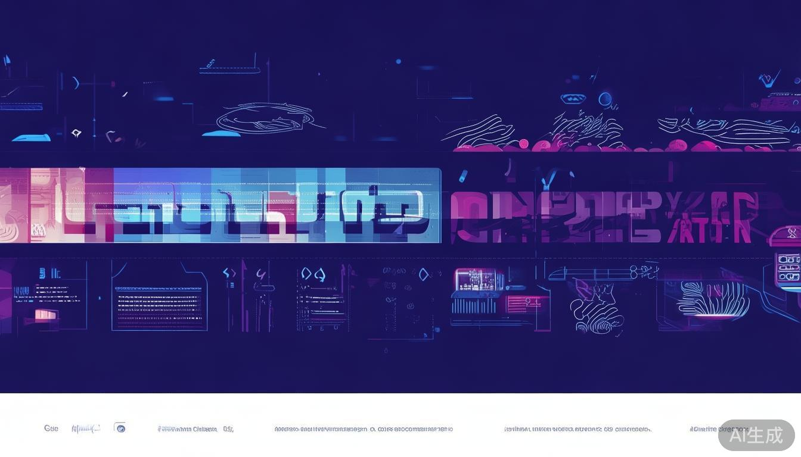

第 5 章 · 视频生成简史：从几秒到完整叙事
本章对应历史篇第 5 章。
为什么视频比图片难这么多
一张图是「一个静止的瞬间」，视频却是「连续的多个瞬间」，还要处理运动、光影、遮挡和「物理一致性」。所以视频生成的成熟，比图片晚了好几年。
2024：视频生成元年

- 2 月：OpenAI 发布 Sora 预览，一条条逼真视频刷屏，被视为「AI 视频的转折点」。
- 6 月：快手发布 可灵（Kling），国产视频模型第一次站上全球舞台。
- 同年：Google 推出 Veo，Runway 持续迭代，中国还有 Vidu 等模型跟进。
技术上，这一代视频模型普遍采用 DiT（扩散 + Transformer） 架构，把「理解运动」这件事从图片模型升级成了视频模型。
2025：走向「可用」和「完整产品」
- 5 月：Google Veo 3 破圈。
- 9 月：OpenAI 发布 Sora 2，物理一致性、音画同步（对白、音效、配乐一体化）、多镜头控制大幅升级，并配套推出独立 Sora App。
- 可灵迭代到 Kling 3.0，国内创作生态（剪映等）把它接进日常剪辑流程。
2026：整合与分化
进入 2026 年，视频模型继续朝「更长、更稳、更可控」进化，同时行业开始整合。有资料显示 OpenAI 调整了 Sora 的独立产品策略，视频能力与 Runway 等平台进一步融合；国产可灵、即梦等则继续深耕中文创作者市场。
对创作者的意义
AI 视频最大的价值，不是「一键生成大片」，而是把中间环节的成本打下来：分镜、空镜、口播背景、配音、字幕都能用 AI 辅助。个人创作者第一次有可能以极低成本做出「工作室级别」的内容——这就是你做视频矩阵的技术前提。
本文由本站 AI 创作整理，内容基于公开知识/官方资料提炼，信息请以官方发布为准； 涉及的历史事件、产品与数据均可在公开渠道查证，本站不编造来源。引用外部内容遵循其原始许可，标注出处即可。
2026-08-31 · 今日 AI 进展
2026-08-31 · 今日 AI 进展
回顾视频生成简史，2026 年 8 月 31 日无疑是具有里程碑意义的一天。在经历了 2023 年至 2025 年的爆发式增长后，AI 视频生成技术正从“静态画面的像素堆叠”迈向“具备时空一致性与物理逻辑的动态模拟”。今日，OpenAI 正式发布了 Sora 2.0 的最新版本，标志着视频生成模型在长时长、高保真度以及实时交互能力上取得了质的飞跃。这一版本不仅解决了此前困扰行业的“帧间闪烁”问题，更重要的是，它引入了类似物理引擎的动力学模拟，使得视频中的水流、火焰以及物体碰撞效果达到了电影级的真实感。
与此同时，NVIDIA 在其 GTC 大会上展示了新一代 Omniverse 视频生成工具，该工具允许创作者通过简单的自然语言指令，生成具有光影追踪效果的 8K 电影级片段。行业分析指出，这一突破性进展将彻底重构内容创作的底层逻辑。传统影视制作中耗时最长的“后期特效”环节，现在已能由 AI 在生成阶段直接完成。这意味着广告主、游戏开发者以及教育机构将能够以极低的成本，定制出具有高度沉浸感的视觉内容。随着生成式视频成本的进一步下降，内容同质化的问题虽然依旧存在，但创作者可以通过 AI 辅助，快速迭代出风格迥异的创意方案。此外，实时生成技术的成熟，也为远程协作与虚拟会议带来了革命性变化，用户不再需要预先录制视频，而是可以直接在会议中让 AI 生成配合当下语境的动态视觉辅助。
总而言之，2026 年 8 月见证了 AI 视频生成从“工具”向“伙伴”的转变。它不再仅仅是生成静态画面的机器，而是成为了能够理解物理世界、参与实时交互的智能体。
- Sora 2.0 发布：支持最长 10 分钟高保真视频，解决长视频闪烁问题。
- 物理引擎集成：模拟流体、火焰及物体碰撞，达到电影级真实感。
- 实时 API 开放：支持毫秒级响应，实现网页端实时对话视频创作。
- 成本下降 80%：生成同等质量视频的算力成本较 2024 年大幅降低。